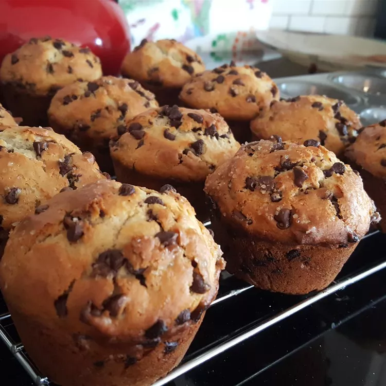

Chocolate Chip Muffin

Description
Ingredients
- ¾ cup milk
- ½ cup vegetable oil
- 1 large egg
- 2 cups all-purpose flour
- ½ cup white sugar
- 2 teaspoons baking powder
- ½ teaspoon salt
- ¾ cup mini semi-sweet chocolate chips
- 1 ½ tablespoons white sugar
- 1 tablespoon brown sugar
Directions
- Preheat the oven to 400 degrees F (200 degrees C). Grease a 12-cup muffin tin or line cups with paper liners.
- Combine milk, oil, and egg in a small bowl until well blended. Combine flour, 1/2 cup sugar, baking powder, and salt together in a large bowl, making a well in the center. Pour milk mixture into well and stir until batter is just combined; fold in chocolate chips.
- Spoon batter into the prepared muffin cups, filling each 2/3 full. Combine 1 ½ tablespoons white sugar and 1 tablespoon brown sugar in a small bowl; sprinkle on tops of muffins.
- Bake in the preheated oven until tops spring back when lightly pressed, about 18 to 20 minutes. Cool in the tin briefly, then transfer to a wire rack. Serve warm or cool completely.